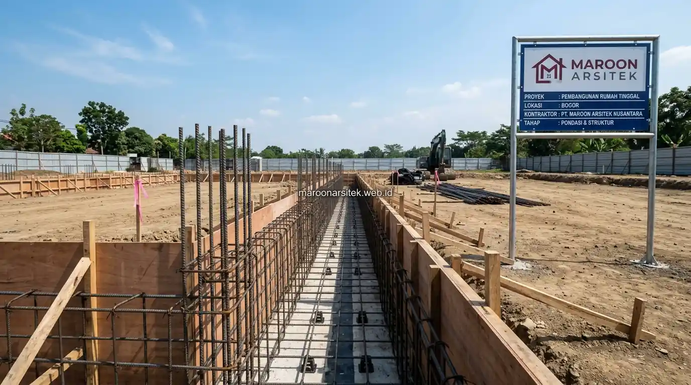

Jasa bangun rumah profesional menerapkan SOP material yang ketat, mencakup verifikasi mutu beton dan kualitas besi tulangan, sebagai dasar mewujudkan struktur pondasi yang kokoh dan minim risiko retak di kemudian hari. Maroon Arsitek menjalankan SOP ini secara konsisten melalui layanan jasa bangun rumah dari nol, memberikan jaminan kualitas struktural terbaik bagi klien.
Kekhawatiran terhadap kualitas beton dan struktur yang mudah retak sering muncul karena klien tidak memiliki cara memverifikasi standar kerja yang diterapkan kontraktor. Bagian berikut menguraikan SOP material dan proses kerja yang diterapkan untuk menjawab kebutuhan struktur anti-retak tersebut.
Verifikasi Mutu Beton Sebelum dan Selama Proses Pengecoran
Verifikasi mutu beton dilakukan melalui pengujian slump dan pengambilan sampel untuk uji kuat tekan, memastikan campuran beton yang digunakan sesuai spesifikasi struktural yang telah direncanakan sebelum proses pengecoran dilakukan. Verifikasi ini menjadi bagian penting dari SOP material yang diterapkan secara konsisten.
Pengujian slump dilakukan di lokasi proyek untuk memastikan konsistensi campuran beton sesuai standar sebelum dituangkan ke dalam bekisting, mencegah penggunaan campuran yang terlalu encer atau terlalu kental yang dapat memengaruhi kekuatan struktur akhir.
Sampel beton yang diambil selama proses pengecoran diuji kekuatannya di laboratorium, memberikan data objektif mengenai kualitas beton yang telah digunakan, sebagai bagian dari dokumentasi kualitas yang dapat diverifikasi klien.
Pengujian Slump sebagai Kontrol Konsistensi Campuran
Kebutuhan konsistensi kualitas beton dijawab melalui pengujian slump yang dilakukan setiap kali pengecoran berlangsung, memastikan campuran beton yang digunakan pada setiap tahap struktur memiliki konsistensi yang sesuai standar teknis.
Pengujian ini mencegah variasi kualitas antar batch beton yang dapat menyebabkan perbedaan kekuatan struktur pada bagian bangunan yang berbeda, sehingga standar kekuatan tetap konsisten di seluruh elemen struktur rumah.
Standar Kualitas Besi Tulangan sesuai Spesifikasi Struktur
Besi tulangan yang digunakan diverifikasi kesesuaiannya dengan spesifikasi struktur, mencakup diameter, jarak pemasangan, dan kualitas material sesuai perhitungan struktural yang telah ditentukan dalam gambar kerja. Standar ini menjadi elemen penting dalam mencegah risiko retak struktural pada bangunan.
Pemasangan besi tulangan mengikuti jarak dan pola yang telah dihitung sesuai beban yang akan ditanggung setiap elemen struktur, memastikan distribusi kekuatan yang merata pada seluruh bagian bangunan yang menggunakan tulangan tersebut.
Pemeriksaan dilakukan sebelum proses pengecoran dimulai, memastikan posisi dan jumlah besi tulangan sudah sesuai gambar kerja bersama tim pelaksana kontraktor rumah, karena kesalahan pada tahap ini sulit dikoreksi setelah beton dituangkan menutupi struktur tulangan.

Pemeriksaan Posisi Tulangan Sebelum Pengecoran Dilakukan
Kebutuhan kepastian posisi tulangan yang tepat dijawab melalui pemeriksaan menyeluruh sebelum pengecoran dimulai, memastikan jarak dan jumlah besi tulangan sesuai perhitungan struktural yang telah direncanakan sejak tahap desain.
Pemeriksaan ini menjadi titik kontrol penting yang mencegah kesalahan struktural tersembunyi, mengingat perbaikan setelah beton mengeras jauh lebih rumit dibanding koreksi sebelum proses pengecoran dilakukan.
Curing Beton yang Tepat untuk Mencegah Retak Struktural
Proses curing atau perawatan beton setelah pengecoran dilakukan sesuai durasi dan metode yang tepat, mencegah beton mengering terlalu cepat yang dapat menyebabkan retak akibat penyusutan yang tidak merata. Tahap ini sering diabaikan namun sangat memengaruhi kualitas akhir struktur beton.
Metode curing mencakup penyiraman berkala atau penutupan permukaan beton untuk menjaga kelembapan selama proses pengerasan berlangsung, sesuai kondisi cuaca dan jenis elemen struktur yang sedang dikerjakan.
Durasi curing disesuaikan dengan standar teknis yang berlaku, memastikan beton mencapai kekuatan optimal sebelum menerima beban tambahan dari tahap konstruksi berikutnya, seperti pemasangan dinding di atas struktur yang baru selesai dicor.
Metode Curing Sesuai Kondisi Cuaca di Lokasi Proyek
Kebutuhan hasil curing yang optimal dijawab melalui penyesuaian metode curing dengan kondisi cuaca di lokasi proyek, seperti penambahan frekuensi penyiraman pada cuaca panas untuk mencegah beton kehilangan kelembapan terlalu cepat.
Penyesuaian ini penting karena kondisi cuaca yang berbeda memerlukan pendekatan curing yang berbeda pula, sehingga hasil akhir struktur beton tetap konsisten kualitasnya terlepas dari variasi cuaca selama masa konstruksi berlangsung.